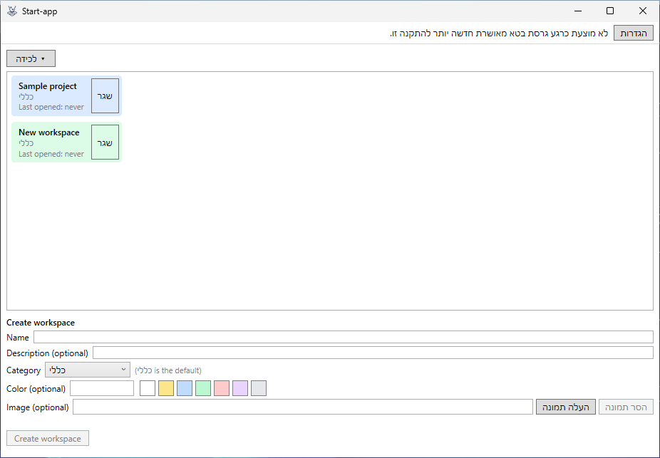

Guide d'utilisation
guide Start-app
Pas à pas dans la version 0.1.0-proto.2 : création d'un espace de travail, ajout d'éléments, capture, lancement et enregistrement - avec de vraies captures d'écran de l'application et les limites à connaître.
Un prototype d'évaluation, pas une version stable
Version du guide : 0.1.0-proto.2
Aucun épisode trouvé. Essayez un autre mot ou effacez la recherche.
qu'est-ce que c'est Start-app
Start-app Enregistre les programmes, dossiers, fichiers et liens sous un seul nom d'environnement. La prochaine fois que vous ouvrirez l'ordinateur, la commande "Exécuter" ouvrira tous les éléments ensemble, sans les sélectionner à nouveau.
Ce guide décrit la version 0.1.0-proto.2 et suit tout le parcours : l'écran principal, la création d'un espace de travail, l'ajout d'éléments manuellement ou par capture, l'édition, le lancement et l'enregistrement. Chapitre Limites connues Centralisez en un seul endroit tout ce que l’application ne fait pas.
Exigences du système et de l'installation
La cible du packaging est Windows x64. Il n’existe pas de version Mac ou Linux vérifiée.
Le téléchargement de la version décrite par ce guide, 0.1.0-proto.2, se trouve dans la liste des versions de la page d'accueil, avec le numéro de version, la taille du fichier et son sha256 pour vérification avant l'installation. Le téléchargement s'effectue uniquement là-bas, pas depuis la page du guide.
Activation après téléchargement
Le téléchargement est un fichier ZIP, pas un programme d'installation. Après téléchargement :
- Extrayez tous les fichiers du ZIP dans un dossier.
- Lancez
Start-app.exedans le dossier principal. - Gardez le dossier
Appà côté du fichier, et déplacez toujours le dossier entier ensemble.
L'application inclut son environnement d'exécution, il n'est donc pas nécessaire d'installer .NET séparément. Aucune inscription, compte ou connexion. Les données sont enregistrées dans un fichier local dans%LOCALAPPDATA%\StartApp\store.json.
Ce qui a été testé : ce prototype a été construit en tant qu'application Windows x64 autonome, et a démarré et arrêté avec succès sur un serveur Windows Server 2025 hébergé. Non testé indépendamment sur Windows 11 domestique, et il n’y a pas d’engagement minimum de version Windows. Il n'y a aucune garantie que les avertissements de sécurité ou les alertes du logiciel antivirus n'apparaîtront pas.
Mise à jour de version
La vérification des mises à jour se fait depuis l'écran des paramètres de l'application, et seules des versions approuvées y sont proposées. Le téléchargement se fait depuis le site officiel et l'installation est manuelle : il n'y a pas de mise à jour automatique.

L'écran principal : la vue environnement
La liste des environnements se trouve en haut de l'écran. Chaque carte affiche le nom, la description, la catégorie, la couleur et l'image choisies, la date de création et la dernière ouverture. La date de dernière ouverture est mise à jour au lancement d'un environnement, et non à l'ouverture d'un élément individuel.
Chaque carte a un bouton "Lancer" adjacent. Un clic droit sur la carte, ou Shift+F10 au clavier, ouvre un menu d'actions : Afficher, Lancer, Ajouter un élément, Personnaliser la carte et Modifier la catégorie. Sous la liste se trouve un formulaire de création d'un nouvel espace de travail, et dans le coin une entrée vers l'écran de capture.


Créer un nouvel environnement de travail
Dans le formulaire de création, le nom est un champ obligatoire. La catégorie par défaut est "Général", et vous pouvez choisir une couleur et une image de carte. La description est facultative.
Ajouter des éléments manuellement
Dans l'écran des détails de l'environnement, ajoutez des éléments de quatre types : site, fichier, dossier et logiciel. Chaque article peut recevoir votre propre nom et description. Les chemins locaux nécessitent un chemin Windows complet, et non un court alias logiciel.
Les éléments sont regroupés à l'écran par type : sites, dossiers, fichiers et programmes. Chaque ligne a un bouton "Modifier" adjacent.

Le bouton "Choisir des espaces existants" ajoute à l'espace de travail un élément déjà enregistré dans un autre espace : choisissez un type, recherchez et sélectionnez.

Capture : numérisation, sélection et duplication
La capture analyse ce qui est actuellement ouvert : les programmes et l'Explorateur de fichiers Windows, ainsi que dans le navigateur, la barre d'adresse. La source du navigateur connaît Chrome, Edge et Brave ; Il n'existe actuellement aucune matrice de compatibilité complète pour chaque navigateur et version. L'analyse peut prendre jusqu'à 10 secondes.
Lors de la création d'un nouvel espace de travail à partir d'une capture, les éléments trouvés sont cochés par défaut, et seuls les cochés sont ajoutés à l'espace.

Lors de l'ajout à un espace existant, les ajouts sont affichés côte à côte face aux éléments enregistrés, avec la mention Added, not saved yet. Rien n'est enregistré tant que vous ne cliquez pas sur Enregistrer.

Il n'y a pas de prévention complète des doublons : un même élément peut être ajouté plus d'une fois, même s'il est déjà enregistré dans l'espace. Il vaut mieux vérifier la liste avant d'enregistrer.
Modification de l'environnement et des éléments
Le menu contextuel de la carte d'espace propose : Afficher, Lancer, Ajouter un élément, Personnaliser la carte et Modifier la catégorie.
Dans la personnalisation de la carte, vous choisissez une couleur et une image d'arrière-plan.
Cliquer sur "Modifier" à côté d'un élément ouvre un éditeur en ligne avec nom, description et adresse. "Annuler" ferme l'éditeur sans modification.

Les modifications ne sont enregistrées qu'après un enregistrement explicite ; détails au chapitre Sauvegarde et stockage local.
Environnement de lancement et tests avant ouverture
La commande "Lancer" ouvre d'abord la fenêtre de sélection "Qu'ouvrir dans l'espace ?" : tous les éléments sont cochés par défaut, et vous pouvez décocher ce que vous ne voulez pas ouvrir. "Annuler" ferme la fenêtre sans rien ouvrir.

Si la vérification identifie avec certitude un élément déjà ouvert, un choix de réouverture apparaît : ces éléments sont décochés par défaut. Cochez uniquement ce que vous voulez rouvrir ; vous pouvez revenir à la sélection ou annuler. Une détection incertaine ne prouve pas que l'élément est fermé. Les résultats distinguent une demande envoyée, un élément ignoré, un échec et le choix de ne pas rouvrir. Une demande envoyée ne confirme pas que la fenêtre s'est ouverte.
Les liens s'ouvrent uniquement en http/https, et les programmes exigent un chemin complet.
Après confirmation, l'application envoie à Windows une demande d'ouverture de chaque élément. Il est important de comprendre ce que cela signifie : une requête envoyée ne constitue pas la preuve que la fenêtre souhaitée s'est réellement ouverte. L'application ne peut pas non plus déterminer de manière fiable si l'élément exact est déjà ouvert. La réouverture peut donc créer des doublons. Un élément dont le fichier est introuvable échoue avec un message « fichier introuvable ».
Limites connues
- Il n'y a pas d'identification automatique du document ouvert dans le logiciel ; Un logiciel ouvert ne constitue pas la preuve d'un fichier particulier qui y est ouvert. Les documents sont ajoutés manuellement.
- Il n'y a aucune garantie de récupération du contenu non enregistré ou de placement de la fenêtre.
- « déjà ouvert » n'est pas connu de manière fiable ; La réouverture peut créer des doublons.
- Un résultat de capture partiel ou une liste vide ne signifie pas qu'il n'y a rien d'ouvert.
- Il n'y a pas de prévention complète des doublons entre éléments enregistrés et nouveaux.
- Il n'y a pas d'opération de suppression d'environnement dans l'interface ; Vous pouvez supprimer des éléments d'un environnement, mais pas supprimer un environnement entier.
- Pas de mise à jour automatique ; une vérification des versions approuvées est disponible dans l'écran des paramètres, et l'installation est manuelle depuis le site officiel.
Sauvegarde et stockage local
Dans la conception actuelle du projet, les espaces de travail sont enregistrés dans un fichier local sur l'ordinateur : %LOCALAPPDATA%\StartApp\store.json. Les modifications ne sont enregistrées que lorsque vous cliquez explicitement sur Enregistrer.
La confidentialité en quelques mots
Dans la conception actuelle, les données des environnements sont enregistrées localement sur l'ordinateur. L'ouverture d'un lien ou d'un logiciel crée la communication habituelle de cette destination - par exemple, l'ouverture d'un site Web dans un navigateur mène à ce site Web.
Ce site lui-même n'inclut pas de formulaires, d'analyses, de polices distantes ou de services tiers.
questions fréquemment posées
quoi Start-app faire?
Enregistre les programmes, dossiers, fichiers et liens sous un seul nom d'environnement et les ouvre tous ensemble avec la commande "Exécuter".
Est-ce que tout sera de retour exactement comme avant ?
Non garanti. Il n'y a pas de capture automatique des documents ouverts dans les programmes, de récupération du contenu non enregistré ou de promesse de placement de fenêtre. L'ouverture est une demande adressée au système d'exploitation, avec vérifications et rapports préliminaires.
Comment ajouter un document ouvert dans un logiciel ?
Manuellement : ajoutez le fichier lui-même en tant qu'élément de type de fichier dans les détails de l'environnement. La capture ne le reconnaît pas toute seule depuis le logiciel ouvert.
Où sont stockées les informations ?
dans un fichier local sur l'ordinateur. Détails dans le chapitre Sauvegarde et stockage local.